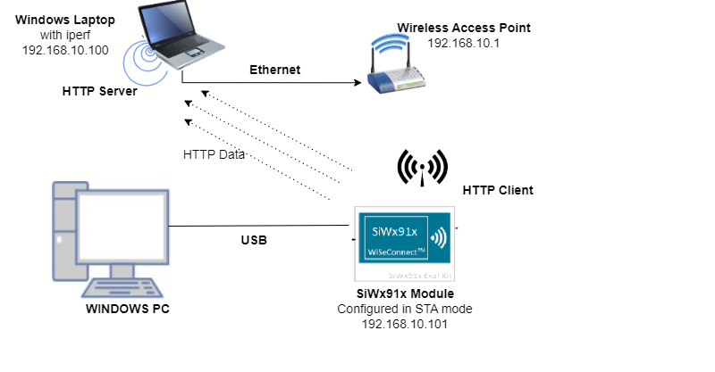
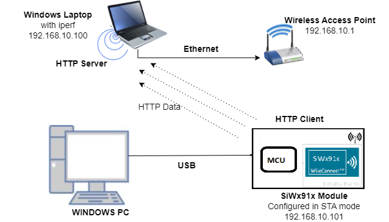
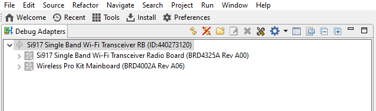
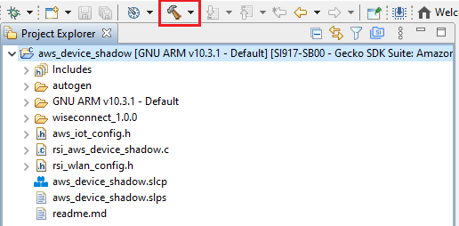
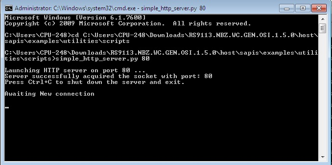
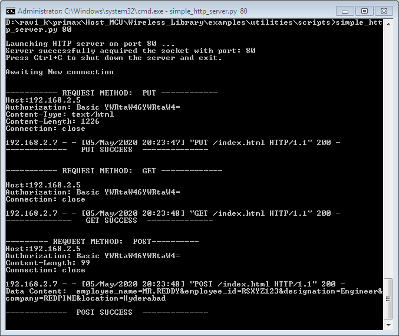

HTTP/HTTPS Client Sockets#
1. Purpose / Scope#
This application demonstrates how to create Silicon Labs device as HTTP/HTTPs client and do HTTP PUT, GET and POST operations with the HTTP/HTTPs server opened on remote peer. In this application, the device configures as Wi-Fi station and connects to Access point and do HTTP/HTTPs PUT, GET and post operation with HTTP/HTTPs server opened on remote peer.
Setting Up#
Before running the application, the user will need the following things to setup.
Hardware Requirements#
Windows PC
Wireless Access Point
TCP server over SSL running in Windows PC2 (This application uses OpenSSL to create TCP server over SSL)
SiWx91x Wi-Fi Evaluation Kit. The SiWx91x supports multiple operating modes. See Operating Modes for details.
SoC Mode:
Silicon Labs BRD4325A
NCP Mode:
Silicon Labs (BRD4180A, BRD4280B); AND
Host MCU Eval Kit. This example has been tested with:
Silicon Labs WSTK + EFR32MG21
Silicon Labs WSTK + EFM32GG11
SoC Mode :#

NCP Mode :#

Project Setup#
SoC Mode
Silicon Labs SiWx91x SoC. Follow the Getting Started with SiWx91x SoC to setup the example to work with SiWx91x SoC and Simplicity Studio.
NCP Mode
Silicon Labs EFx32 Host. Follow the Getting Started with EFx32 to setup the example to work with EFx32 and Simplicity Studio.
Configuring the Application#
The application can be configured to suit user requirements and development environment. Read through the following sections and make any changes needed.
NCP Mode - Host Interface#
By default, the application is configured to use the SPI bus for interfacing between Host platforms(EFR32MG21) and the SiWx91x EVK.
Bare Metal/RTOS Support#
To select a bare metal configuration, see Selecting bare metal.
Wi-Fi Configuration#
Configure the following parameters in rsi_https_client_app.c to enable your Silicon Labs Wi-Fi device to connect to your Wi-Fi network.
#define SSID "SILABS_AP" // Wi-Fi Network Name
#define PSK "1234567890" // Wi-Fi Password
#define SECURITY_TYPE RSI_WPA2 // Wi-Fi Security Type: RSI_OPEN / RSI_WPA / RSI_WPA2
#define CHANNEL_NO 0 // Wi-Fi channel if the softAP is used (0 = auto select)Client/Server IP Settings#
#define HTTP_PORT 443 //! Server port number
#define HTTP_SERVER_IP_ADDRESS "192.168.0.111" //! HTTP Server IP address. The desired parameters are provided below. User can also modify the parameters as per their needs and requirements.#
#define GLOBAL_BUFF_LEN 15000 //Application memory length which is required by the driverLOAD_CERTIFICATE refers to load certificates into flash
0 - Already certificates are there in flash so no need to laod.
1 - Certicates will load into flash.
#define LOAD_CERTIFICATE 0 Note!
If certificates are not there in flash then ssl handshake will fail.
#define DHCP_MODE 1 //whether IP address is configured through DHCP or STATICNote!
If user wants to configure STA IP address through DHCP then set DHCP_MODE to "1" and skip configuring the following DEVICE_IP, GATEWAY and NETMASK macros.
(Or)If user wants to configure STA IP address through STATIC then set DHCP_MODE macro to "0" and configure following DEVICE_IP, GATEWAY and NETMASK macros.
IP address to be configured to the device in STA mode should be in long format and in little endian byte order.
- Example: To configure "192.168.10.10" as IP address, update the macro DEVICE_IP as 0x0A0AA8C0.#define DEVICE_IP 0X0A0AA8C0IP address of the gateway should also be in long format and in little endian byte order.
- Example: To configure "192.168.10.1" as Gateway, update the macro GATEWAY as 0x010AA8C0 #define GATEWAY 0x010AA8C0IP address of the network mask should also be in long format and in little endian byte order
- Example: To configure "255.255.255.0" as network mask, update the macro NETMASK as 0x00FFFFFF #define NETMASK 0x00FFFFFFTesting the Application#
Follow the below steps for the successful execution of the application.
Loading the SiWx91x Firmware#
Refer Getting started with a PC to load the firmware into SiWx91x EVK. The firmware file is located in <SDK>/connectivity_firmware/
Creating the Project and builing the Application#
Refer Getting started with EFX32, for settin-up EFR & EFM host platforms
creation - SoC Mode :#
Connect your board. The Si917 compatible SoC board is BRD4325A.
Studio should detect your board. Your board will be shown here.

creation - NCP Mode :#
Connect your board. The supported NCP boards are: BRD4180A,BRD4280B
Studio should detect your board. Your board will be shown here.

Selecting an example application and generate project#
Go to the 'EXAMPLE PROJECT & DEMOS' tab and select your desired example application

Click 'Create'. The "New Project Wizard" window appears. Click 'Finish'

Build Project#
SoC Mode :#
Once the project is created, right click on project and go to properties → C/C++ Build → Settings → Build Steps
Add post_build_script_SimplicityStudio.bat file path (SI917_COMBO_SDK.X.X.X.XX\utilities\isp_scripts_common_flash) in build steps settings as shown in below image.

Check for M4 projects macros in preprocessor settings(RSI_M4_INTERFACE=1)
Check for 9117 macro in preprocessor settings(CHIP_9117=1).
Click on the build icon (hammer) to build the project

Successful build output will show as below.

NCP Mode :#
Check for 9117 macro in preprocessor settings(CHIP_9117=1).
Click on the build icon (hammer) to build the project
Successful build output will show as below.
Program the device#
Once the build was successfull, right click on project and click on Debug As->Silicon Labs ARM Program as shown in below image.


Running the SiWx91x Application#
After making any custom configuration changes required, build, download and run the application as below.
In Windows PC2, install python and run HTTPS server.
In release package python scripts are provided to open HTTPS server in the path: resources/scripts
Run simple_https_server.py by port number 443 as argument to open HTTPS server.

After the program gets executed, the device connects to AP and get IP.
After successful connection with Access Point, the Silicon Labs device request for HTTP PUT to PUT/Create the file on to the server, which is given in index.txt file and wait until put file complete.
Remote web server accepts a PUT request and writes the received data to a file. User can find the created new file "index.html" on Windows PC2 in the following path, utilities/scripts
After successful creation of file using HTTP PUT, Silicon Labs device request for the file "index.html" using HTTP GET method and wait until complete response receive from Server.
After receiving complete response for the given HTTP GET, the device post the given data in HTTP_DATA macro to HTTP server using HTTP POST meth
User can see the log messages at HTTP server. Please find the below image for success responses for HTTP PUT, HTTP GET and HTTP POST.

Observing the output prints on serial terminal#
SoC Mode:#
Connect USB to UART connector Tx and GND pins to WSTK radio board.
Connect Tx(Pin-6) to P27 on WSTK
Connect GND(Pin 8 or 10) to GND on WSTK

Prints can see as below in any Console terminal

NCP Mode:#
Prints can see as below in any Console terminal
Selecting Bare Metal#
The application has been designed to work with FreeRTOS and Bare Metal configurations. By default, the application project files (Simplicity studio) are configured with FreeRTOS enabled. The following steps demonstrate how to configure Simplicity Studio to test the application in a Bare Metal environment.
Bare Metal with Simplicity Studio#
Open the project in Simplicity Studio
Right click on the project and choose 'Properties'
Go to 'C/C++ Build' | 'Settings' | 'GNU ARM C Compiler' | 'Symbols' and remove macro 'RSI_WITH_OS=1'
Select 'Apply' and 'OK' to save the settings